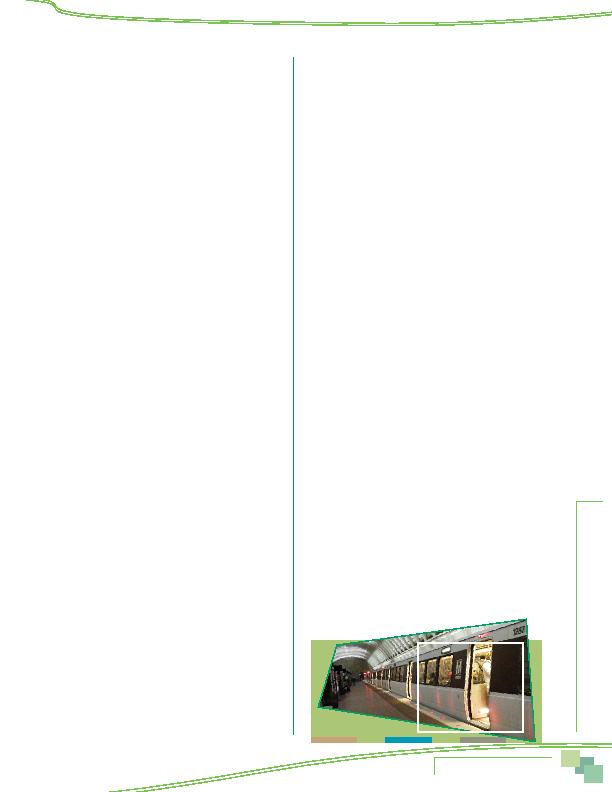

MWCOG-Comm
uter Conn
ecti
on
s-- 2010 State o
f th
e Comm
ute Report
9 1
60d Did your employer offer you any information
about financial incentives that might be
available to you if you moved your home to a
location close to work?
1 Yes
2 No
9 DK/Refused
60e Did your employer offer you any information
about financial incentives that might be
available if you moved your home to a location
close to a bus stop or train station?
1 Yes
2 No
9 DK/Refused
AWARENESS OF ADVERTISING
61 Have you heard, seen, or read any advertising
about commuting in the past year?
1 yes
2 no (SKIP TO Q81)
9 DK/Ref (SKIP TO Q81)
62 What messages do you recall from this
advertising?
(DON'T READ, ACCEPT MULTIPLE
RESPONSES) (OKAY NOT TO SHOW INFREQUENT
INCIDENCE RESPONSES ON SCREEN CODE AS OTHER
THEN CODE TO PROPER CATEGORIES IN
POST-PROCESSING)
1 none (SKIP TO Q81)
2 that you should rideshare, carpool, vanpool (NOT
ACCEPTABLE ANSWER; PROBE FOR WHY AND RECORD
ELSEWHERE)
3 that new trains and/or buses are coming
4 that you can call for carpool or vanpool info
5 call 1-800-745-RIDE/call Commuter Connections
6 Commuter Choice Maryland
7 contact the Commuter Connections website
(www.commuterconnections.org,
www.commuterconnections.com)
8 it saves money
9 it saves time
10 it is less stressful
11 guaranteed ride home (GRH)
12 employer would give me SmarTrip/SmartBenefit,
Metrochek benefits
13 it would help the environment
14 it reduces traffic
15 it saves wear and tear on the car
16 Ozone Action Days/Code Red Days
17 Telework Center/telecommuting
18 HOV lanes
19 regional services/programs are available to
help with commute
20 use the bus or train, use Metrobus
21 Way to Go, Way to Go Arlington
22 Virginia MegaProjects, Dulles rail extension
23 HOT lanes
24 Inter-County Connector (ICC)
25 other (SPECIFY) ___________________
99 DK/Ref.
(SKIP TO Q81)
63 What organization or group sponsored the ad you
recall?
(DO NOT READ, ACCEPT MULTIPLE RESPONSES)
1 Commuter Connections
2 Metropolitan Washington Council of Governments,
MWCOG, COG
3 Metro, WMATA
4 MARC, Maryland Commuter Rail
5 VRE, Virginia Railway Express
6 VDOT (Virginia Department of Transportation)
7 DDOT (District of Columbia Department of
Transportation)
8 MDOT (Maryland Department of Transportation)
9 VDRPT, Virginia Department of Rail and Public
Transportation
10 Maryland State Highway Administration
11 MTA, Maryland Mass Transit Administration
12 Maryland Department of the Environment
13 WABA, Washington Area Bicycling Association
14 Arlington County Commuter Services
15 other (specify) __________________
99 DK/Ref.
64 And where did you see, hear, or read this
advertisement?
(DO NOT READ, ACCEPT MULTIPLE
RESPONSES)
1 Commuter Connections website
2 other website, internet (SPECIFY ) ________________
3 radio
4 TV
5 postcard in mail
6 newspaper
7 in train station
8 on train or bus
9 at work
10 other (specify) __________________
19 DK/Ref.
IF HOMEALL, SKIP TO Q81
IF TELEALL, SKIP TO Q81
IF WKALL, SKIP TO Q81
Appendix--Survey Questionnaire